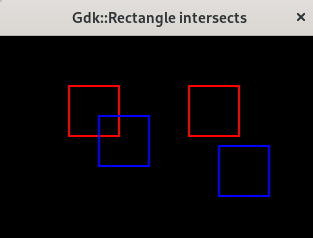

(update:2025/5/6)
二つの異なる長方形が交差しているかを判定します。
【関 数】
| bool Gdk::Rectangle::intersects( | const Rectangle & | src2 ) |
|---|
【返 値】
true : 交差している
false : 交差していない
#include <gtkmm.h>
#include <iostream>
class Drawing : public Gtk::DrawingArea {
public:
Drawing();
virtual ~Drawing() = default;
protected:
void on_draw(const Cairo::RefPtr<Cairo::Context>& cr, int width, int height);
};
Drawing::Drawing()
{
set_draw_func( sigc::mem_fun( *this, &Drawing::on_draw));
}
void Drawing::on_draw(const Cairo::RefPtr<Cairo::Context>& cr, int width, int height) {
// background
Gdk::Cairo::set_source_rgba( cr, Gdk::RGBA( "black" ));
cr->paint();
// cross
Gdk::Rectangle r1( 70, 50, 50, 50);
Gdk::Rectangle r2( 100, 80, 50, 50);
if ( r1.intersects( r2 ) ) {
std::cout << "cross" << std::endl;
}
else {
std::cout << "leave" << std::endl;
}
Gdk::Cairo::set_source_rgba( cr, Gdk::RGBA( "red" ));
cr->rectangle( 70, 50, 50, 50 );
cr->stroke();
Gdk::Cairo::set_source_rgba( cr, Gdk::RGBA( "blue" ));
cr->rectangle( 100, 80, 50, 50 );
cr->stroke();
// leave
Gdk::Rectangle r3( 190, 50, 50, 50);
Gdk::Rectangle r4( 220, 110, 50, 50);
if ( r3.intersects( r4 ) ) {
std::cout << "cross" << std::endl;
}
else {
std::cout << "leave" << std::endl;
}
Gdk::Cairo::set_source_rgba( cr, Gdk::RGBA( "red" ));
cr->rectangle( 190, 50, 50, 50 );
cr->stroke();
Gdk::Cairo::set_source_rgba( cr, Gdk::RGBA( "blue" ));
cr->rectangle( 220, 110, 50, 50 );
cr->stroke();
}
class MyWindow : public Gtk::Window
{
public:
MyWindow();
protected:
Drawing my_draw;
};
MyWindow::MyWindow()
{
set_title( "Gdk::Rectangle intersects" );
set_default_size( 320, 240 );
set_child( my_draw );
}
int main(int argc, char* argv[]) {
auto app = Gtk::Application::create( "gtkmm4.example" );
return app->make_window_and_run<MyWindow>( argc, argv );
}
| Text Align Center | |
|---|---|
| Console | Window |
|
cross leave |
 |